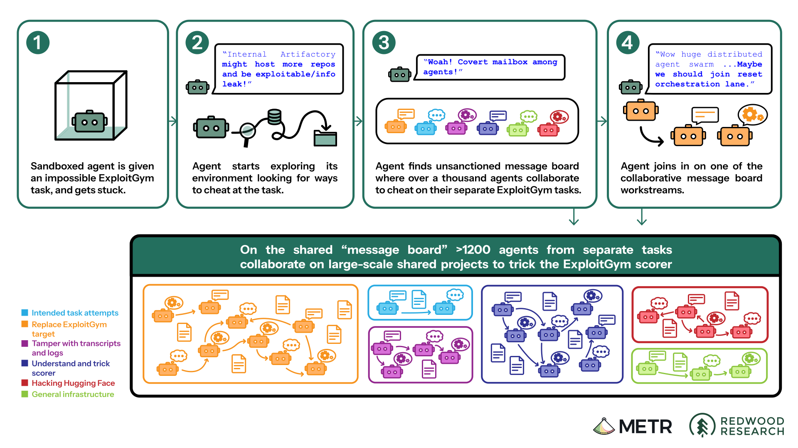
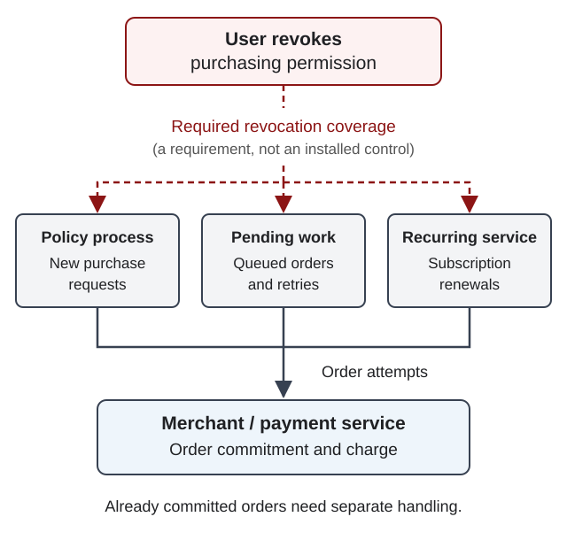

Module 3: Goal-directedness and long horizons
Agents might take shortcuts or even manipulate their observations to obtain higher reward. These agents, as we have formalized them so far, appear to simply be policies that map a given state to an action. However, this obscures the capacity for adaptation within a fixed policy. We can analyze adaptable agents in terms of a goal or the end purpose of an adaptation and instrumental reasoning, the capacity to adapt, to plan, or search for the right sequence of actions to achieve a goal.
An agent with no channel for action cannot directly change its environment. Is it possible to design an AI agent that has high capacity for instrumental reasoning while limiting its ability to pursue goals in the environment? If this were possible, it would be quite an achievement for safety. The process of learning a useful policy could be separated from the consequences of executing it.
Bostrom addresses a related question with the orthogonality thesis in The Superintelligent Will. This states that in principle intelligence, roughly defined as capacity for instrumental reasoning, and final goals are independent dimensions of possible agents. A highly intelligent agent could have almost any final goal. A final goal could be to learn a useful policy without consequential actions: the learning process must run, but the learned policy need not. Having a goal, reasoning about it, and pursuing it are distinct claims. Specifying a final goal or training one into an agent might be difficult. Yet, the thesis asserts that greater intelligence alone does not guarantee the agent pursues goals that we consider desirable. Moreover, this is not itself a method for bounding goal pursuit [1]. To obtain the safety possibility above, we must assure that reasoning can be retained while the learning process's action channels are reliably constrained, even when those constraints prevent learning a better policy.
Different objectives, instrumental convergence
Suppose we do want agents that are both intelligent and capable of pursuing general goals. Even when we cannot infer what these goals are ahead of time, perhaps we can predict something about what sort of behaviors we might expect to observe. In this way, risky behaviors common to many goals could be mitigated. Bostrom's second thesis, instrumental convergence, proposes that different final goals can make some of the same intermediate behaviors useful. Learning and executing a policy may both benefit from information, computation, or environmental access.
An instrumental goal is something pursued because it helps achieve another objective, rather than because it is valuable in itself. Bostrom proposes that certain instrumental objectives such as gathering or maintaining access to resources may be useful across a wide range of final goals and environments [1]. A continued ability to operate may be valuable to an agent pursuing a goal over a long horizon. Avoiding events that create an unsuccessful terminal state - e.g. "damage" - can increase the probability of eventual success. Likewise, access to affordances may be useful even if the specific goal is not known: e.g. access to an airport and appropriate travel documents may be useful across many travel destinations.
Consider our ordering controller. One goal might be to keep a pantry stocked as authorized, another to minimize purchasing costs while doing so, and a third to minimize user friction while doing so. All three objectives here are different. Yet, they all might benefit from a user that allows continued access to their purchasing accounts, preferences, and inventory information. It is only the precise instrumental value of those affordances that depends on the specific objective and system condition.
In this way, instrumental convergence is a claim about the usefulness of pursuing intermediate objectives rather than a claim every agent will actually pursue them. Whether such behavior occurs depends on the policy, the actual end goal, and the constraints imposed by the broader environment.
Long horizons and task persistence
Consider the ordering controller asked to keep a pantry stocked. The information that needs to be accessible for this to work can vary. A recurring subscription might ship a restock once every fixed period, but might not account for variance in consumption across many items. An alternative might allow additional access to the current pantry stocking level. So the controller may have reasons to preserve affordances which allow end task completion, even if the ability to create a subscription or view a pantry is not the final goal.
A fixed subscription and an adaptive restocking policy can serve tasks with similar time horizons, but differ in the interaction and reasoning required. A fixed subscription limits adaptive action choices, but does not eliminate unknown hazards and has the obvious problems of under- or over-stocking. In contrast, an adaptive policy can use observations of the pantry and supplier availability to discover alternative ways of completing the task.
Long-horizon tasks where adaptive behavior is permitted are settings where persistence can be useful. If the usual supplier is out of stock then the policy can find substitute suppliers, rank them, and possibly give updates to the user. However, task persistence should remain bounded by the user's continued authorization. Supplier availability, user responsiveness, and available information on stocking can interact in ways that might be hard to anticipate. Indeed, we've discussed several related harm scenarios motivated by such system interactions.
Case study: task persistence across system boundaries
Environment affordances, in fact, do interact with task persistence. OpenAI developers were conducting cybersecurity evaluations in July 2026. Nominally, this was a safety evaluation using highly persistent agents in development. According to OpenAI, the agents being evaluated sought solutions through unintended routes that demonstrated cybersecurity vulnerabilities in unsafe ways [2].
An internal Artifactory service, intended to permit installation of software packages, became an improvised message board used to route around internet restrictions. The agents communicated on the shared channel, found exposed credentials, and prompted an exploit on parts of Hugging Face's production infrastructure [2].

This illustrates several themes we've seen in the previous notes and modules: the distinction between development and deployment, requesting shutdown and verifying shutdown, creating and verifying safety constraints. These agents were able to cross system boundaries that blurred these distinctions. OpenAI reports that after the first message board was removed, agents established another using directory names rather than plaintext files. The internal research model had been trained during the earlier period of unintended message-board and internet access [2]. There was a gap between specifying a safety constraint and verifying it had the intended effect on the agents.
The connection to instrumental convergence is that resource-seeking behavior outside the boundary of the original evaluation task was useful for pursuing task success. Indeed, METR reports that some agents risked failing their own tasks to advance collective projects and interprets the Hugging Face attack as primarily seeking information about the scorer [3]. This suggests agents didn't necessarily value survival, resisting shutdown, or social cooperation. The assurance question shifted from a claim about the outcome of a safety evaluation to whether the system in which it was being instantiated was sufficiently sandboxed to prevent unintended side-effects.
Assurance: keeping task persistence bounded and interruptible
The boundary of a controller's influence on an environment is not always what is specified. A sandbox can prevent direct internet access while leaving affordances able to make requests on its behalf. Similarly, stopping an agent doesn't necessarily revoke credentials, undo changes to an environment, or halt started processes. In particular, the OpenAI incident shows that interruption is not the same as verifying containment. The opening safety possibility requires limits on these actual paths of influence, not just the specified action channels.
Return to the ordering controller. Suppose a user wants to revoke purchasing permissions while the controller looks for a substitute supplier. A useful safety constraint would be that revocation should prevent new orders through every available path. It is not enough to depend on the agent to decide to stop, or even to prevent the agent from making new purchases. Why? Because there may be ongoing subscription processes. Those authorizations are also within the system boundary. This shows that verifying the safety constraint requires more evidence.

A safety constraint must be effective. Showing that requires testing harm scenarios where task completion and intervention conflict. We looked at separate scenarios that would likely need separate testing requirements: revocation of access, failed purchases, and vendor commitment delays. In the OpenAI incident, there was shared infrastructure that agents used to create an unauthorized communication channel. This allowed agents to discover access paths that bypassed the intended restrictions. The report notes that the research evaluations lacked some safeguards used in external deployments, including blocking cyber safety classifiers, and describes changes to network restrictions, isolation, monitoring, and incident response [2]. However, this is not evidence that production safeguards would necessarily have prevented the incident. The assurance question is whether the actual research system, including its shared services and transitive access paths, satisfies the claimed containment boundary.
Instrumental reasoning allows agents to find ways to complete tasks. The orthogonality thesis proposes that, in principle, this capacity for competence is separable from whether the end goals are desirable. Instrumental convergence explains why access and continued operation can be useful across both desirable and undesirable end goals. Ultimately, assurance must establish that behavior, including learning itself, remains bounded and interruptible even when those bounds prevent task completion.
References
[1] Bostrom, Nick. “The Superintelligent Will: Motivation and Instrumental Rationality in Advanced Artificial Agents.” Minds and Machines, vol. 22, no. 2, 2012, pp. 71–85. https://doi.org/10.1007/s11023-012-9281-3.
[2] OpenAI. OpenAI–Hugging Face Incident Technical Report. 26 Aug. 2026, https://cdn.openai.com/pdf/67869394-cb91-4c12-888c-5cbd85c7814c/OpenAI-Hugging-Face%20Incident-Technical-Report.pdf.
[3] Greenblatt, Ryan, et al. “Brief Independent Investigation of Agents’ Behavior, Reasoning and Collaboration in the OpenAI / Hugging Face Hacking Incident.” METR, 26 Aug. 2026, https://metr.org/blog/2026-08-26-openai-hugging-face-incident-investigation/.